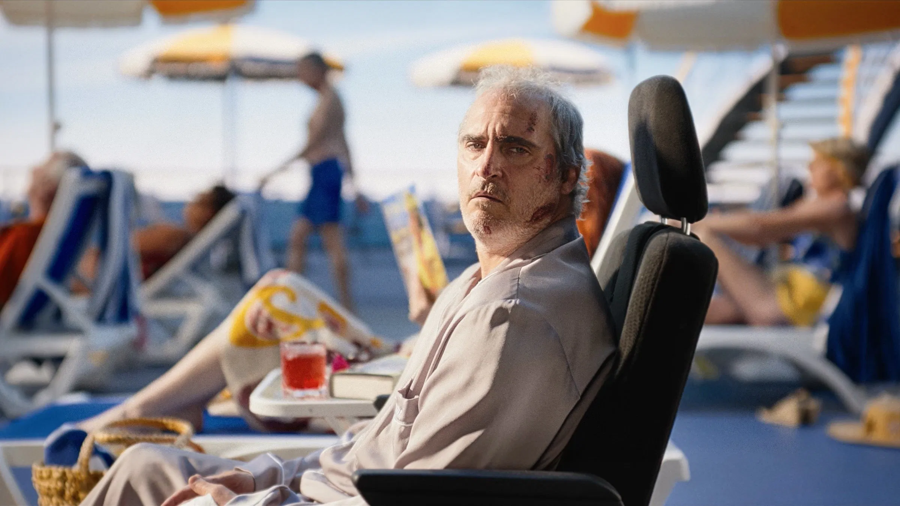
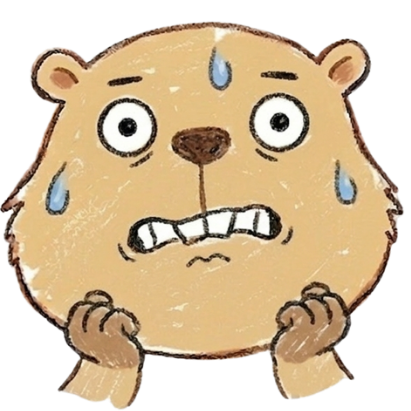

Beau Is Afraid
この映画の怖さはいくつかの要素が組み合わさっています。それぞれを事前に知っておくことで、心の準備ができます。
直接的に強烈な動物虐待映画ではないけど、不穏な扱い・ショッキングな描写を含むため注意寄りです。
これを知っておけば少し楽に観られます。タイムスタンプ付きで危険ポイントをご案内。

【ラスト】ボーは最終的に巨大な闘技場のような場所で"裁判"にかけられる。観客たちに見守られる中、母親から人生そのものを責め立てられ、逃げ場を失ったままボートごと沈没する。救いはほぼない。
【真相】映画全体が"支配的な母親に人生を支配された男の悪夢"として描かれている。どこまで現実か妄想かは曖昧。観客側もずっと精神的迷路に閉じ込められる構造になっている。
【生存情報】主要人物の多くが死亡、または破滅的な結末を迎える。ボー本人も実質的には救済なし。
【後味】かなり重い。スッキリ感はゼロ。「結局ボーは一生、母親から逃げられなかったのか…」という無力感が残る。
| タイトル | ボーはおそれている（Beau Is Afraid） |
|---|---|
| 公開年 | 2023年 |
| 監督 | アリ・アスター |
| 主演 | ホアキン・フェニックス |
| 制作国 | アメリカ |
| 上映時間 | 179分 |